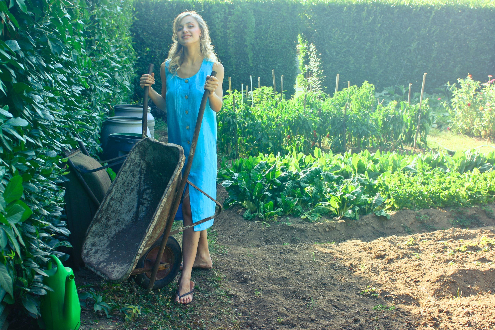

Stuart is a retired teacher and has held his allotment for 12 years. He has been the winner of 'Most Productive Category' for 6 of those 12 years and he attributes this to thorough planning.
>Sahera is an established author and leadership coach who cares for her allotment as an escape from her working life. Having inherited her allotment 5 years ago after it had been neglected for some time, she understands the importance of good preperation from the very start.
 >
>